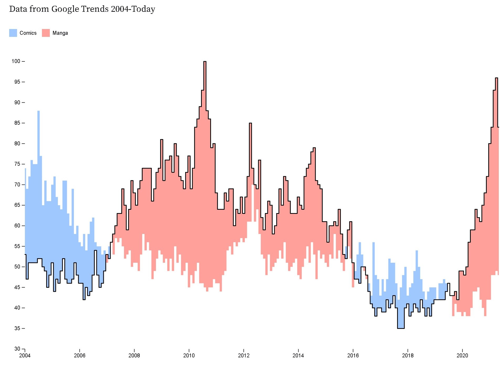

Comic Explorator
How Trends in Comics Around the World Reveal Our Society
Comic books are still very popular around the world, but in the recent decades there has been a shift as to what the readers like more.
Firstly, let’s take a look at the global sales
Global comics market
We can see that the digital comics are much more popular in Japan than in the US.
In fact, Japan’s digital comics revenues are bigger than the revenue from print and digital in the US combined
A closer look at the largest Markets of Eastern Countries and Western Countries
While digital comics sales in North America remain stable, the sales in Japan is escalating.
Why such a big difference you ask?
Also, Manga - a unique Japanese
comics style that is very popular, not only in Japan, but around the world
Popularity Trends in the US
Manga has been overtaking American Comics even in the US

The sheer difference in the magnitude of numbers with which Manga is outselling Comics speaks volumes
..so why do people seem to like Manga more now?
To answer that we should first look at the gender ratios of characters in Comics and Mangas
As we see Manga has a noticeably bigger ratio of females characters. This is because Manga targets larger demographics. To illustrate this point further, take a look at the amount of genres that Manga offers